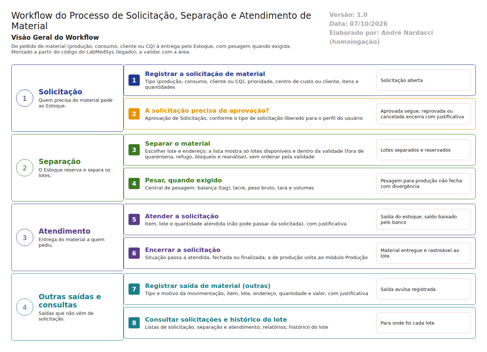

Objetivo
Este documento descreve o fluxo de solicitação, separação e atendimento de material no LabMedSys: o pedido de material ao Estoque (pela produção, para consumo, para cliente ou para o Controle da Qualidade), a aprovação, a separação dos lotes, a pesagem e a entrega.
É o fluxo que faltava no documento da equipe "Solicitação e liberação da Produção". Aquele arquivo, na pasta Documentação/, é uma cópia do fluxo de Recebimento.
Foi montado a partir do código do sistema legado. O que depende da prática da área está marcado como a validar. Os casos de teste estão no fim.
Escopo
- Solicitação de material: produção, consumo, cliente e Controle da Qualidade.
- Aprovação da solicitação.
- Separação dos lotes e pesagem.
- Atendimento (saída do estoque) e encerramento.
- Saída de material avulsa ("outras") e consultas.
Fora do escopo: a ordem de produção e o uso do material na fabricação (módulo Produção), a devolução de sobras (fluxo próprio) e a saída por nota fiscal e remessa (fluxo de remessa).
Nomes das telas: como aparecem no alto de cada tela. A referência ao código fica só nas regras.
Visão geral do processo

Quem precisa de material registra uma Solicitação de Material, informando o tipo, a prioridade, o centro de custo ou o cliente, os itens e as quantidades. Quando a solicitação é do tipo produção e o módulo Produção está ativo, o Estoque avisa a Produção ao concluir a separação.
A Aprovação de Solicitação libera ou recusa o pedido, conforme os tipos de solicitação permitidos ao perfil do usuário. No atendimento, o Estoque escolhe os lotes e endereços. A lista mostra só lotes disponíveis e dentro da validade, sem ordenar pela validade. A Separação de Material registra a separação e o relatório, e, quando o item exige, a Pesagem registra balança, lacre, peso e tara.
No Atendimento de Solicitação, a quantidade entregue é baixada do estoque. O banco atualiza os saldos sozinho, e a solicitação muda de situação até ser encerrada.
Descrição funcional das etapas
"A numeração das regras de negócio é reiniciada em cada atividade, visando facilitar sua identificação e manutenção."
Solicitação de material
Regras de negócio
- RN001 – Tipos de solicitação: produção, consumo, cliente e Controle da Qualidade (
LaboSys_Util/Constantes.cs:43-46). - RN002 – Situações da solicitação: aberta, em atendimento, separada, atendida, fechada, finalizada e cancelada (
Constantes.cs:30-36). A validar: a ordem exata entre separada, atendida, fechada e finalizada. - RN003 – Exige código, tipo, prioridade, situação, centro de custo ou cliente, item e quantidade, e justificativa na alteração (
estoque/solicitacao_ed.aspx, validadores). Na de consumo, também data e almoxarifado. - RN004 – Quando o módulo Produção está ativo, a conclusão da separação de uma solicitação do tipo produção atualiza o módulo Produção (
movimentacao_cq_reprovado_ed.aspx.cs:178-181,separacao_ed.aspx.cs:202). A confirmar no teste: se a solicitação de produção é criada no módulo Produção, a partir da ordem de produção. - RN005 – O banco tinha um gatilho para recalcular a situação da solicitação a cada mudança nos itens, mas ele está desligado (
TBL_SOLICITACAO_ITEM.sql:76,DISABLE TRIGGER trAll_StatusSolicitacao). A situação é mudada pelas próprias telas, por exemplo para "separada" (movimentacao_cq_reprovado_ed.aspx.cs:186). A confirmar no teste: se a situação acompanha corretamente cada etapa.
Telas do sistema
| Módulo | Tela | Finalidade |
|---|---|---|
| Estoque | Solicitação de Material | Lista das solicitações |
| Estoque | Solicitação de Material (Produção) | Pedido para a produção |
| Estoque | Solicitação de Material (Consumo) | Pedido para consumo interno |
| Produção | (ordem de produção) | Origem da solicitação de produção; a mapear no módulo Produção |
Aprovação da solicitação
Regras de negócio
- RN001 – Cada perfil tem os tipos de solicitação que pode tratar (
LaboSys_DAL/dalUsuario.cs:1724, tabela de perfil × tipo de solicitação). A confirmar no teste: se isso limita quem aprova, quem solicita ou os dois, e onde se configura. - RN002 – Aprovação, reprovação e cancelamento exigem justificativa.
Telas do sistema
| Módulo | Tela | Finalidade |
|---|---|---|
| Estoque | Aprovação de Solicitação | Aprovar ou recusar pedidos |
Separação e pesagem
Regras de negócio
- RN001 – A lista de lotes do atendimento mostra só saldo disponível (fora de quarentena e refugo), dentro da validade, de lote não bloqueado e não em reanálise (
LaboSys_DAL/dalItemLote.cs:1006-1060,retornarLoteSaldo, usada ematendimento_op.aspx.cs:968). - RN002 – A lista não é ordenada pela validade: o sistema nem sugere nem obriga a usar primeiro o lote que vence antes (
dalItemLote.cs:1006-1060, sem ordenação). A ordenação por validade existe só na lista de lotes para venda (dalItemLote.cs:547-548). A RDC 658/2022 pede o uso do material de forma a garantir a validade e a rotação do estoque. - RN003 – O cancelamento da separação exige justificativa ("Justificativa é obrigatória para o cancelamento!"), e não se altera separação cujo processo já foi finalizado ("Processo vinculado a solicitação já foi finalizado!").
- RN004 – A pesagem exige item, quantidade maior que zero, tag da balança, número do lacre, peso e tara, e valida peso bruto, líquido e tara (
estoque/pesagem_ed.aspx). - RN005 – A pesagem para produção não pode ser finalizada com divergência de peso. Na divisão em volumes, a soma dos volumes A e B precisa bater com o total.
Telas do sistema
| Módulo | Tela | Finalidade |
|---|---|---|
| Estoque | Separação de Material | Escolher lotes e endereços |
| Estoque | Pesagem (Central de Pesagem) | Pesar o material separado |
Ponto de atenção
Lote com data de reanálise vencida pode aparecer para separação se ninguém o tiver agendado para reanálise. A regra que o tirava do saldo disponível foi desligada no banco (ver o fluxo de reprovado, reanálise e revalidação, CT-EST-058).
Atendimento e encerramento
Regras de negócio
- RN001 – O atendimento exige item e lote, e a quantidade atendida não pode passar da solicitada ("Quantidade atendida não pode ser superior a solicitada!").
- RN002 – O atendimento avulso exige armazenagem e cliente ou centro de custo.
- RN003 – A saída baixa o saldo do lote e do endereço pelo banco (gatilho
trAllMovimentacaoItem). - RN004 – Justificativa obrigatória.
Telas do sistema
| Módulo | Tela | Finalidade |
|---|---|---|
| Estoque | Atendimento de Solicitação | Entregar o material |
| Estoque | Atendimento | Detalhe do atendimento |
Outras saídas e consultas
Regras de negócio
- RN001 – A Saída de Material (Outras) exige data, tipo e motivo da movimentação, item, lote de entrada, almoxarifado, local, rua, coluna, andar, quantidade, valor e justificativa (
estoque/saida_item_ed.aspx). - RN002 – O histórico do lote mostra as solicitações e saídas ligadas a ele (ver o fluxo de movimentação interna).
Telas do sistema
| Módulo | Tela | Finalidade |
|---|---|---|
| Estoque | Saída de Material (Outras) | Saída sem solicitação |
| Estoque | Histórico do Lote | Para onde foi o lote |
Ponto para os desenvolvedores
Casos de teste
Dados: o lote TESTELOTE001 aprovado e disponível (fluxo de reprovado e reanálise, CT-EST-050), um segundo lote do mesmo item com validade mais curta (TESTELOTE003), o centro de custo TESTE CC ESTOQUE e um perfil de teste com tipos de solicitação liberados. A solicitação de produção depende do módulo Produção; se não houver ordem de produção de teste, usar a solicitação de consumo.
| Caso | O que fazer | Resultado esperado |
|---|---|---|
| CT-EST-070 | Registrar uma solicitação de consumo do TESTE MATERIA PRIMA sem cada obrigatório; depois completa |
Recusas; completa, fica aberta |
| CT-EST-071 | Aprovar a solicitação com um usuário cujo perfil tem o tipo liberado | Aprovada; registra quem aprovou |
| CT-EST-072 | Tentar aprovar com um usuário cujo perfil não tem o tipo liberado | Recusa ou a solicitação não aparece para ele |
| CT-EST-073 | Atendimento: ver a ordem dos lotes oferecidos | Registrar a ordem. Pela boa prática, TESTELOTE003 (vence antes) deveria aparecer primeiro; pelo código, não há ordenação |
| CT-EST-074 | Atendimento: escolher o lote que vence depois (TESTELOTE001) |
Registrar se o sistema aceita, avisa ou recusa (RN002) |
| CT-EST-075 | Separação: procurar um lote em quarentena, reprovado, bloqueado e em reanálise | Nenhum aparece |
| CT-EST-076 | Pesagem com divergência de peso numa solicitação de produção | Não finaliza |
| CT-EST-077 | Pesagem sem tag da balança, sem lacre ou com tara inválida | Recusas |
| CT-EST-078 | Atender quantidade maior que a solicitada | Recusa |
| CT-EST-079 | Atender a quantidade correta com justificativa | Saldo do lote e do endereço baixado; a solicitação muda de situação; o histórico do lote mostra a saída |
| CT-EST-080 | Cancelar uma separação sem justificativa e depois com | Primeiro recusado; depois cancelado; o saldo volta |
| CT-EST-081 | Saída de Material (Outras) com tipo e motivo TESTE |
Saída registrada com justificativa; saldo baixado |
| CT-EST-082 | Solicitação de produção vinda do módulo Produção (se houver ordem de teste) | Aparece no Estoque com o tipo produção e segue o mesmo fluxo |
| CT-EST-083 | Permissão: abrir Atendimento de Solicitação pelo endereço com usuário sem acesso | Acesso negado (ver DV-EST-008) |